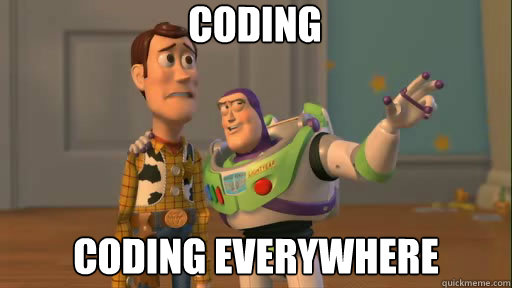
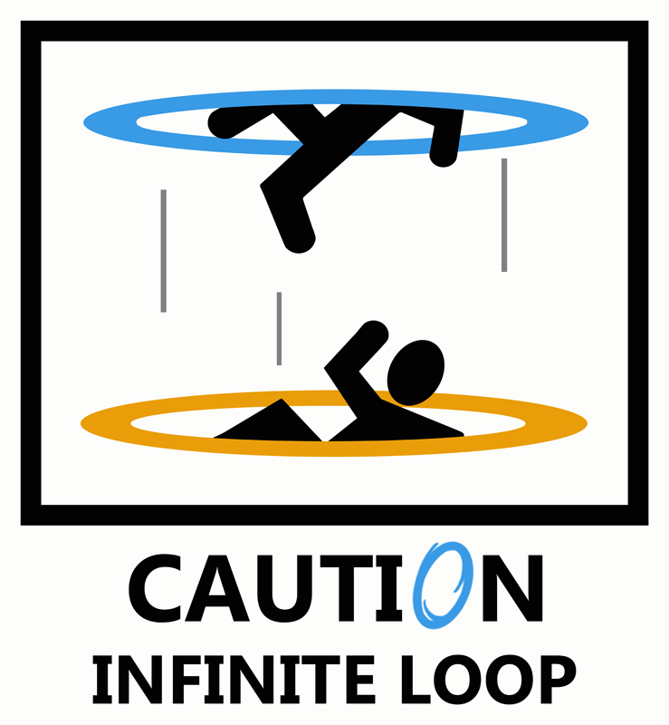
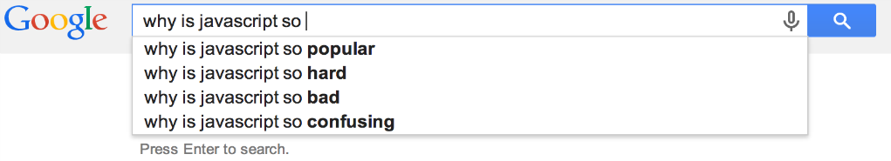

return jeffKeslin
the next generation
Six years ago I became a math teacher because I thought math was cool and I wanted teenagers who were about to embark on a journey to college to think the same thing. I also felt it was my duty to do so because I had been on the other side and seen what our job market looks like for people who struggle with math. I wanted kids to know that it's a powerful tool and that it can be an enjoyable part of their future career. I'm leaving teaching now to do some of my own learning, but I see the same sort of phenomenon happening, in that there is another powerful tool out there (coding) that kids aren't equipt with.
We already live in a time where the tech world has a shortage of talent to fill their job openings (hence the existence of DBC) and it seems that this will continue until the average public school realizes that coding is something they should be teaching their kids. My fear is that kids who are in school now are in this unfortunate era where coding skill has become essential to our society, but schools haven't figured out they need to teach it yet. They may find themselves, in a decade or so, being the only people looking for jobs who don't have experience with coding.
This ill timing reminds me of my dad, who is a brilliant guy and a talented engineer but was educated in a time before people realized that typing would be an essential skill for the future. Despite his years of work experience and vast intelligence he still types with his two index fingers and it takes him forever to write a simple email!
This isn't a life or death situation for him, and not being able to code probably isn't for my students either, but it stinks to know how much more powerful they could be if they could code. It takes a long time for our schools to adapt to changes in our economies and my students might unfortunately be in high school at just the wrong time.
feelin loopy

Writing a loop in a computer program allows you to execute a particular block of code a predetermined number of times, or until a certain condition is met. Ruby has a vast array (no pun intended) of methods with which to create loops. For starters, there's: Array#each, Array#select, "while", "do", "for in", "until" and even "retry." Which one you chose is up to you and depends on the conditions driving your iterations. Let's look at some basic examples of a couple of these to get a feel for how and when they're used.
Let's start with the classic While Loop which has a similar form in the JavaScript language. In the example below the condition after the while loops tell the computer to execute the following code for as long as the value of x is less than 5. In this case, it prints the message, "This will print 5 times!", you guessed it, 5 times.

The command "until" is differs from the while loop because it runs while the condition given is FALSE. Check out the example below. This will still print the message 5 times, but now stops the loop when x has become 5, therefore making the condition no longer false.
Now, let's look at a loop that iterates over the elements of an array. Let's say we had an array of last names and wanted to add the prefix "Mr." to each one. For this we could use Array#each. Take A look at the example below.

The result should look like this:
With so many options for writing loops in Ruby this is only the tip of the iceberg. Check out the Resources page for more Ruby info or tools
And happy coding!
mmm, javascript.
Javascript has become the premier client side language for web development and manipulating the contents of a page in your browser. In this post, we'll examine:
Why is Javascript popular? What is it used for? What makes it so cool?But first, let's see what the general googling public thinks of it:
So I guess we can confirm that javascript is indeed popular, and also that many people find it confusing or hard to learn. It's actually pretty simple and powerful and allows us to do all sorts of cool things on the web (for example: the twitter feed over to your right. ==>
But first, a little history lesson:
Javascript was originally developed by Netscape (remember those guys) for use in their browser Netscape Navigator when they were competing from browser dominance with Microsoft Internet Explorer. It was originally designed to be a lightweight complement to Java that would appeal to nonprofessional programmers and amatuer web developers. It was designed to allow for the manipulation of elements on a page in the browswer and quickly gained widespread use and attention for its ease of implementation. Microsoft eventually gave in and introduced JavaScript support in its browser, Internet Explorer 3.0, and now JavaScript has industry wide support on all browsers.
Contributing to its popularity are the numerous tools developers can use to write and debug code in JavaScript, as well as, additions to its capabilities via jQuery, Node, and AJAX.
AJAX is the lovely little tool we can thank for the making web a much less static-y place. It allows for automatic refreshing and updating of pages and databases without leaving the page. We see this in action when someone posts something on facebook, or when our twitter feed updates without us telling it to.
Thanks to the addition of Node.js, JavaScript can now dip its toes into the server side world of web development instead of having to rely on other technologies like PHP.
Fun Facts About JavaScript
1. It was originally given the name "Mocha"
2. It supports something called Duck Typing
3. The JavaScript interpreter was originally called "SpiderMonkey", now it's known as "Rhino".
4. The widgets on your dashboard are made using JavaScript.
Check out the Resources page for more JavaScript info or tools
And happy coding!
thinking about thinking
According to thelearningweb.net and Professor Anthony Gregorc, I have thinking styles that can be can be described as Concrete Sequential and Concrete Random.
Concrete Sequential Thinking: Based in reality. Information is processed in an ordered, sequential, and linear way.
Concrete Random Thinking: Information is processed through experimentation.

These results come as no surprise to me when reflecting on how I've made choices in the past and how I've approached problems and made decisions. I like to think of myself as having a "mathematical mind" and I do not let my emotions make decisions for me. My appreciation of objective thinking and experimental problem solving led me to studying Engineering in college, and also to becoming a math teacher later on. And now, it's led me to coding. I really love seeing a solution come together sequentially when I'm coding. The problem solving process really is a lot of fun for me. I've also learned much of what I know about coding with Ruby or JavaScript by experimentation. I find the description of the left brain thinker to be pretty close to how I feel my brain works. And I believe, for better or worse, that my thinking is pretty lopsided to the left.
As a math teacher these two thinking styles also present themselves on a daily basis when looking at the way my lessons are created and presented. Part of teaching Geometry is teaching proofs, or in other words, how to linearly and logically (with precision and mathematical justification) get from point A to point B. This is essentially an attempt to teach my students how to be concrete sequential thinkers.
 The other cornerstone of my lessons is forcing students to use experimentation to find a solution. Making mistakes and taking mysterious routes to a solution are encouraged. When my students get stuck on a challenge problem and ask if doing this or that works, my response is often, "I don't know. Try it. See if the answer makes any sense." This answer frustrates them, but normally through this experimentation they discover something deeper about the problem and how the numbers work instead of just knowing the process of solving that particular problem.
The other cornerstone of my lessons is forcing students to use experimentation to find a solution. Making mistakes and taking mysterious routes to a solution are encouraged. When my students get stuck on a challenge problem and ask if doing this or that works, my response is often, "I don't know. Try it. See if the answer makes any sense." This answer frustrates them, but normally through this experimentation they discover something deeper about the problem and how the numbers work instead of just knowing the process of solving that particular problem.
As the Gregorc survey mentions, each learning style can be effective in its own way and no style should be deemed superior to another. I can see how any of the four thinking styles can be well suited for learning coding through Dev Bootcamp and I'm sure there are developers and bootcampers who are all over this spectrum. I think that by understanding these learning styles you can create an advantage when working with someone of an opposite style. By doing so you can have a group of people using multiple ways of thinking to look at the same problem and attack it from all angles. As long as everyone in that group can value other thinkers' ideas along with their own, this can be a very powerful dynamic for designing and problem solving.
The biggest struggle for me so far during Phase 0 has not been learning the material, but finding the time to maximize my learning and not just learn enough to complete the tasks. Because I'm still currently working full time it's hard to find time to do the extra things I need to do to commit my learning to memory. With more time I could do more research on the topics that I haven't fully grasped yet, or I could help solidify my learning by getting more practice and repetition.
Also, just for fun, I'd like to point out that sometimes I feel like my thinking style is not unlike Homer Simpson's.

margins, borders, and padding, oh my!
If you're like me, when you first had to use margins and padding in CSS you had one or all of the following questions pop into your mind:
Which one is inside the border? Aren't they the same thing? If I change one, does it affect the size of the other? Why can't I get some padding/margin above or below this element?Let's see if we can address some of these questions. Let's start with a visual...

This is how your Chrome Dev Tools will display the box model for an element that you've selected. Let's identify a couple important things. For this div, There's a content area of 920 x 44 pixels. There is padding of 10 pixels on the top, bottom, left, and right. And there are margins of 10px on each side. The border region (colored in yellowish) is left blank indicating that there is no border for this div. Let's see what this div actually looks like then.

This is an early version of the footer for this blog site. You'll notice it's color-coded just like our box model. The content area is in blue, the padding area in green is separating the content from the edge of the div, and the orange margin is separating the div from other outside elements.
Here's the important thing to remember:
Padding: Separates inner content from the borders of the div Margin: Separates the div from other elementsTime for a pop quiz. Take a look at the 5 divs in the image below. Take a second to identify which divs have margins and padding and which do not:

Hover your cursor below to reveal the answers...
1. No padding, no margins, 1px red border 2. No padding, 5px margins on all sides, 1px border 3. Padding of 5px on all sides, no left/right margin, no border4. Padding of 5px, margin of 5px, no border 5. Padding, margins, and borders all around!For more information on margins, borders, and padding and other fun stuff, click on the Resources link at the top of the page.
And happy coding!
these are a few of my favorite tech things...
FiveThirtyEight

In terms of content, FiveThirtyEight is like a dream come true. For the most part, it's a cross between my two favorite things: math and sports. And oh yeah, it's hosted by my intellectual hero, Nate Silver. I'm a big fan of Nate Silver's book, "The Signal and the Noise," and I've always dreamed of being able to get my news and sports updates from an author that loves charts and graphs as much as I do.
There's also something about the simplicity of the design and the way the information is organized on the page that I find comforting. The featured article is in plain sight at the top, the nav bar allows you search for an article of interest based on the topics (which are color coded) or you can search by the author with the sidebar on the right. The look is very clean and organized and simple, which I find appealing (I think you'll notice that as a theme when you see my next two choices).
After spending time on the site I feel a little anxious that I've just wasted so much time reading articles that I had no intention of reading, but the content is so rich with valuable information that it is not time spent that I regret.
Toothpaste For Dinner

Toothpaste for Dinner is a classic webcomic that's been around forever it feels like. Again, the simplicity of the site is appealing but also the simplicity and dryness of the content speaks to my strange sense of humor. The site has changed very little over the years which adds a nice nostalgic element to it.
The site has gotten a little messier with adverts all up and down the left side of the page and the social networking buttons appended to each cartoon. The extra material makes scrolling and navigating a little clunkier than it used to be, but the author has found new ways for you to search for archived material and randomly upload cartoons from the past years if you just can't get enough laughter.

I know what you're thinking, I ran out of ideas so I just picked the most recognizable website on the planet to save time. Not true! There's something magical about a company that has endless financial resources and technology (most of which it has created itself) and still has a homepage that has only 1 ugly logo and a search bar on a white background. Obviously Google has progressed to offering tons of services and products to people beyond its search algorithm, but it's still the only thing they allow to be their centerpiece when you visit, and all other items are hidden carefully at the top and bottom of the page. This kind of aesthetic is the opposite of sites like Yahoo! or CNN and is part of what makes it such a great company. I'll spare you the list of Google's products and services since we're all familiar with them and just end this paragraph with a tip of my cap to their always surprising and delightful Google doodles that I'm often treated to when I sit down at my desk at work and open my computer for the first time.
switching desks

I've been a high school Math teacher for 6 years now. It's the hardest thing I've ever done, but has also been the great joy of my life so far. I've met so many amazing kids and had an opportunity to share my love of math and science with any kid that'll listen.
Every group of kids I've taught in that six years has had a completely different character and mindset, which is why I bring this up. I often wonder at the end of a long school day things like, "Why is my 2nd period class so much more fun to teach than my first? Why are they learning more? Why does Eder work so hard even though he already has an A? Why is my 3rd period so quiet?"
The answer to all these questions is that culture matters. As a teacher I've seen a group of 30 kids who have a laundry list of struggles to worry about become energized and unified by the passion of a couple hard working students and acheive things that they could not have otherwise. This is what drew me to Dev Bootcamp. It feels like it was built by teachers. And by teachers I mean, people who have found a way to communicate their passions with a large group and create a sense of unity. When I read about dev bootcamp's curriculum or the structure of the classes or the emphasis on social learning (I'm terrified first of all) but I also feel like it was a program designed by lovers of teaching not just lovers of code.
Now I'm going back to being a student again and while I definitely have "imposter syndrome," as Shereef mentioned, I'm comforted by the fact that there's an emphasis on community and embracing our fears together.
I feel like Luke Skywalker when he picks up the lightsaber for the first time and doesn't really know what to do with it (and is at great risk of chopping his own arm off at any second). But he's on the verge of having access to a great power, if he's willing to put in the work and recognize his own weaknesses and turn them into strengths with the help of others.
I've had the pleasure of watching a handful of my students accept this challenge over the last few years, and they've inspired me to do the same. So I'm switching desks.
May the Force be with us all.